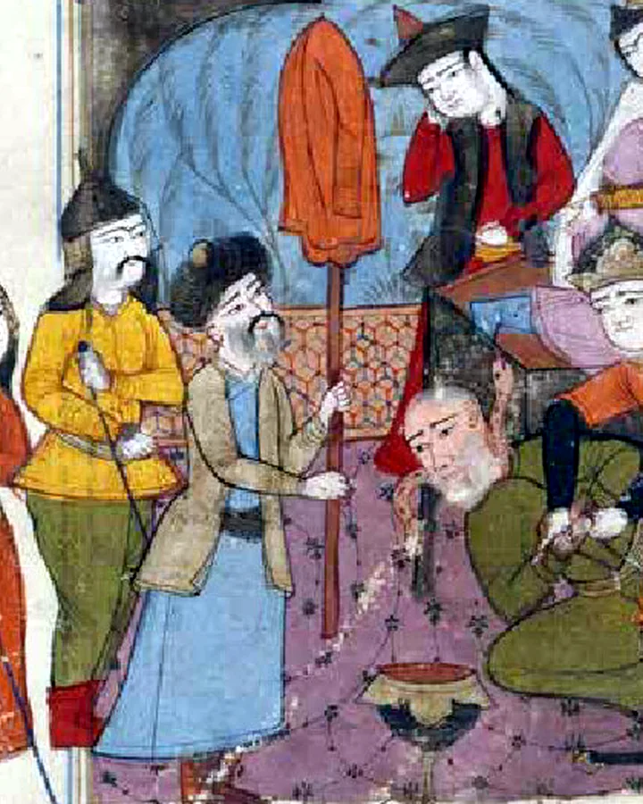
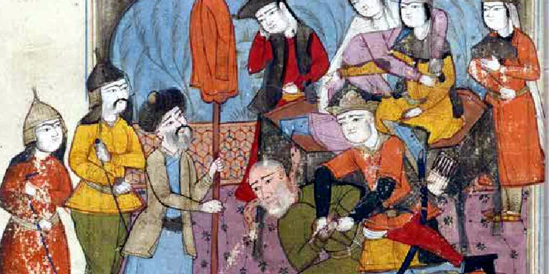

Want the Islamic Republic gone? You are not alone.
Iranians who want a free Iran find each other here, and get to work.
- Talk liveEvery day, from 10am U.S. Eastern, in the chat on YouTube.
- Meet the membersOn the Discord, between shows.
- Meet in personOutside Iran only, with people you already trust.
Inside Iran? Just read. I never ask you to gather, to report or to say who you are. What is safe for you


Start with a hello. End up carrying the banner.
- 1
Join
Minutes, online, from anywhere outside Iran. Say hello first.
- 2
Gather
In person, outside Iran only. A dorehami of people you already trust, or a rally that is already public.
- 3
Lead
For a table that kept meeting. Get the people who represent you on the record, in public.
- Azadeh
- Ahangar
- Derafshdar
- Dalir
- Pahlavan
- Jahan Pahlavan
Six ranks from the world of the Shahnameh. Everyone starts as Azadeh: one of the free.
Who stands with the people of Iran
All 539 members of the US Congress, each with a score out of 100 from their own votes and words. How I score
8 more have too few votes for a score yet.
Who in Congress can Iranians count on?
Say it where other readers can answer you, in Persian or English.
Discussion
All discussions
Every discussion on this site in one place, newest first, Persian and English side by side. Tap the name on a post to open the page it is about. Readers' words, not mine.
Leave out anything private about anyone. The rules, and what your account keeps
Come and talk
The show is live on YouTube and the community talks on Discord. Bring the score you think I got wrong.